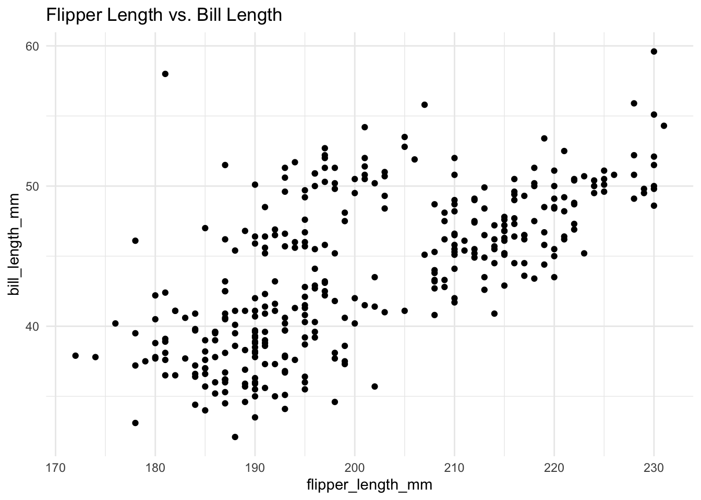
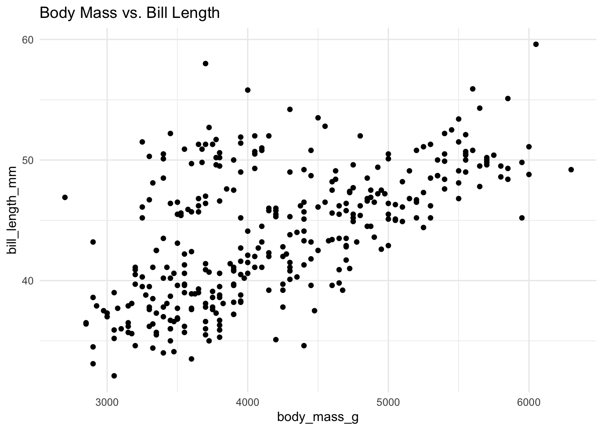

This white paper presents a comprehensive approach to achieving reproducibility in R workflows by combining two powerful tools: renv for R package management and Docker for containerizing the computing environment. Together, these tools ensure that an R workflow runs identically across different systems with the same packages, R version, and system libraries as the original setup. The paper includes a practical case study demonstrating collaborative development using this approach, with an emphasis on testing procedures to maintain code quality.
1 Executive Summary
Reproducibility stands as a cornerstone of professional data analysis, yet in practice, achieving it consistently with R workflows remains challenging. R projects frequently break when transferred between computers due to mismatched R versions or package dependencies, leaving developers in what is colloquially known as “dependency hell.” This white paper presents a comprehensive approach to solving this problem by combining two powerful tools: renv for R package management and Docker for containerizing the computing environment. Together, these tools ensure that an R workflow runs identically across different systems with the same packages, R version, and system libraries as the original setup.
2 Motivation
Imagine you’ve written code that you want to share with a colleague. At first glance, this may seem like a straightforward task—simply send the R files via email. However, ensuring that your colleague can run the code without errors and obtain the same results is often much more challenging than anticipated.
When sharing R code, several potential problems can arise:
Different versions of R installed on each machine
Mismatched R package versions
Missing system dependencies (like pandoc or LaTeX)
Missing supplemental files referenced by the program (bibliography files, LaTeX preambles, datasets, images)
Different R startup configurations (.Rprofile or .Renviron)
A real-world scenario often unfolds like this:
You email your R Markdown file to your colleague, Joe
Joe attempts to run it with R -e "source('peng1.Rmd')"
R isn’t installed on Joe’s system
After installing R, Joe gets an error: “could not find function ‘render’”
Joe installs the rmarkdown package
Now pandoc is missing
After installing pandoc, a required package is missing
After installing the package, external files are missing (bibliography, images)
And so on…
This cycle of troubleshooting can be time-consuming and frustrating, often resulting in the “it works on my machine” syndrome. Even when the code eventually runs, there’s no guarantee that Joe will get the same results that you did.
To ensure true reproducibility, your colleague should have a computing environment as similar to yours as possible. Given the dynamic nature of open source software, this can be difficult to achieve through manual installation and configuration.
The approach outlined in this white paper offers a more robust solution. Rather than sending standalone text files, you can provide a complete, containerized environment that includes everything needed to run your analysis. With this approach, your colleague can run a simple command like:
docker run -v"$(pwd):/home/joe"-v"$(pwd)/output:/home/joe/output" username/penguins-analysis
This creates an identical R environment on their desktop, ready for them to run or modify your code with confidence that it will work as intended.
3 Introduction
3.1 The Challenge of Reproducibility in R
R has become a standard tool for data science and statistical analysis across numerous disciplines. However, as R projects grow in complexity, they often develop intricate webs of dependencies that can make sharing and reproducing analyses difficult. Some common challenges include:
Different R versions across machines
Incompatible package versions
Missing system-level dependencies
Operating system differences (macOS vs. Windows vs. Linux)
Conflicts with other installed packages
R startup files (.Rprofile, .Renviron) that affect code behavior
These challenges often manifest as the frustrating “it works on my machine” problem, where analysis code runs perfectly for the original author but fails when others attempt to use it. This undermines the scientific and collaborative potential of R-based analyses.
3.2 A Two-Level Solution
To address these challenges comprehensively, we need to tackle reproducibility at two distinct levels:
Package-level reproducibility: Ensuring exact package versions and dependencies are maintained
System-level reproducibility: Guaranteeing consistent R versions, operating system, and system libraries
The strategy presented in this white paper leverages renv for package-level consistency and Docker for system-level consistency. When combined, they provide a robust framework for end-to-end reproducible R workflows.
4 renv: Package-Level Reproducibility
4.1 What is renv?
renv (Reproducible Environment) is an R package designed to create isolated, project-specific library environments. Instead of relying on a shared system-wide R library that might change over time, renv gives each project its own separate collection of packages with specific versions.
4.2 Key Features of renv
Isolated project library: renv creates a project-specific library (typically in renv/library) containing only the packages used by that project. This isolation ensures that updates or changes to packages in one project won’t affect others.
Lockfile for dependencies: When you finish installing or updating packages, renv::snapshot() produces a renv.lock file - a JSON document listing each package and its exact version and source. This lockfile is designed to be committed to version control and shared.
Environment restoration: On a new machine (or when reproducing past results), renv::restore() installs the exact versions of packages specified in the lockfile. This creates an R package environment identical to the one that created the lockfile, provided the same R version is available.
4.3 Basic renv Workflow
The typical workflow with renv involves:
# One-time installation of renvinstall.packages("renv")# Initialize renv for the projectrenv::init() # Creates renv infrastructure# Install project-specific packages# ...# Save the package state to renv.lockrenv::snapshot()# Later or on another system...renv::restore() # Restore packages from renv.lock
While renv effectively handles package dependencies, it does not address differences in R versions or system libraries. This limitation is where Docker becomes essential.
5 Docker: System-Level Reproducibility
5.1 What is Docker?
Docker is a platform that allows you to package software into standardized units called containers. A Docker container is like a lightweight virtual machine that includes everything needed to run an application: the code, runtime, system tools, libraries, and settings.
5.2 Docker’s Role in Reproducibility
While renv handles R packages, Docker ensures consistency for:
Operating system: The specific Linux distribution or OS version
R interpreter: The exact R version
System libraries: Required C/C++ libraries and other dependencies
Computational environment: Memory limits, CPU configuration, etc.
External tools: pandoc, LaTeX, and other utilities needed for R Markdown
By running an R Markdown project in Docker, you eliminate differences in OS or R installation as potential sources of irreproducibility. Any machine running Docker will execute the container in an identical environment.
5.3 Docker Components for R Workflows
For R-based projects, a typical Docker approach involves:
Base image: Starting from a pre-configured R image (e.g., from the Rocker project)
Dependencies: Adding system and R package dependencies
Configuration: Setting working directories and environment variables
Content: Adding project files
Execution: Defining how the project should run
A simple Dockerfile for an R Markdown project might look like:
# Use R 4.1.0 on Linux as base imageFROM rocker/r-ver:4.1.0# Set the working directory inside the containerWORKDIR /workspace# Install renv and restore dependenciesRUNR-e"install.packages('renv', repos='https://cloud.r-project.org')"# Copy renv lockfile and infrastructureCOPY renv.lock renv/activate.R /workspace/# Restore the R package environmentRUNR-e"renv::restore()"# Default command when container runsCMD ["/bin/bash"]
A more comprehensive Dockerfile that includes additional tools and user setup might look like:
This Dockerfile creates a consistent environment with a specific R version and packages, regardless of the host system.
6 Combining renv and Docker: A Comprehensive Approach
6.1 Why Use Both?
Using renv or Docker alone improves reproducibility, but combining them provides the most comprehensive solution:
Docker guarantees the OS and R version
renv guarantees the R packages and their versions
Together they achieve end-to-end reproducibility from operating system to package dependencies
This combined approach creates a fully portable analytical environment that can be shared and will produce identical results across different computers.
6.2 Integration Strategy
The recommended workflow integrates renv and Docker in the following manner:
Develop locally with renv: Create your R project with renv to manage package dependencies.
Snapshot dependencies: Use renv::snapshot() to create a lockfile.
Containerize with Docker: Create a Dockerfile that uses a specific R version and incorporates the renv lockfile.
Share both: Distribute both the code (with lockfile) and the Docker configuration.
Execute consistently: Run analyses in the Docker container for guaranteed reproducibility.
This strategy ensures that your R Markdown documents and analyses will run identically for anyone who has access to your Docker container, regardless of their local setup.
7 Practical Example: Collaborative R Markdown Development with Testing
The following case study demonstrates how two developers can collaborate on an R Markdown project using renv and Docker to ensure reproducibility, with integrated testing procedures to maintain code quality.
7.1 Project Scenario
Two data scientists are collaborating on an analysis of the Palmer Penguins dataset. Developer 1 will set up the initial project structure and create a basic analysis. Developer 2 will extend the analysis with additional visualizations. They’ll use GitHub for version control and DockerHub to share the containerized environment. Both will implement testing to ensure code quality before merging changes.
7.2 Step-by-Step Implementation
7.2.1 Developer 1: Project Setup and Initial Analysis
Step 1: Create and Initialize the GitHub Repository
Developer 1 creates a new GitHub repository called “penguins-analysis” and clones it locally:
install.packages("renv") # If not already installedrenv::init() # Initialize renv for the project
This creates the necessary renv infrastructure, including an initial renv.lock file.
Step 3: Install Required R Packages
install.packages("ggplot2")install.packages("palmerpenguins")install.packages("testthat") # For testinginstall.packages("devtools") # For development utilitiesrenv::snapshot() # Save package versions to renv.lock
Step 4: Create Initial R Markdown Analysis
Developer 1 creates a file named peng1.Rmd with the following content:
---
title: "Palmer Penguins Analysis"
author: "Developer 1"
date: "2025-05-13"
output: html_document
---
## Flipper Length vs. Bill Length
::: {.cell}
```{.r .cell-code}
ggplot(palmerpenguins::penguins, aes(x = flipper_length_mm, y = bill_length_mm)) +
geom_point() +
theme_minimal() +
ggtitle("Flipper Length vs. Bill Length")
Warning: Removed 2 rows containing missing values or values outside the scale range (`geom_point()`).
:::
**Step 5: Create Tests for Analysis Functions**
Developer 1 creates a test directory structure and initial tests:
```bash
mkdir -p tests/testthat
And a test file tests/testthat/test-data-integrity.R:
context("Data Integrity")test_that("penguins data is available and has expected dimensions", {expect_true(exists("penguins", where ="package:palmerpenguins"))expect_equal(ncol(palmerpenguins::penguins), 8)expect_gt(nrow(palmerpenguins::penguins), 300)})test_that("penguins data has required columns", {expect_true("species"%in%names(palmerpenguins::penguins))expect_true("bill_length_mm"%in%names(palmerpenguins::penguins))expect_true("flipper_length_mm"%in%names(palmerpenguins::penguins))expect_true("body_mass_g"%in%names(palmerpenguins::penguins))})
Step 6: Create a Dockerfile
Developer 1 creates a Dockerfile that deliberately excludes the R Markdown file to ensure that Developer 2’s local files are used when running the container:
# Use R 4.1.0 as base imageFROM rocker/r-ver:4.1.0# Set the working directory inside the containerWORKDIR /workspace# Install renv and restore dependenciesRUNR-e"install.packages('renv', repos='https://cloud.r-project.org')"# Copy only the renv.lock and renv infrastructureCOPY renv.lock renv/activate.R /workspace/# Restore the R package environmentRUNR-e"renv::restore()"# Create test directoryRUNmkdir-p tests/testthatCMD ["/bin/bash"]
Developer 2 runs the container with the local repository mounted:
docker run --rm-it-v"$(pwd):/workspace"-w /workspace username/penguins-analysis:v1 /bin/bash
This approach: - Uses the renv-restored environment from the container - Allows Developer 2 to access and modify files directly from their local machine
Step 4: Extend the Analysis
Developer 2 modifies peng1.Rmd to add a second plot for body mass vs. bill length:
---
title: "Palmer Penguins Analysis"
author: "Developer 2"
date: "2025-05-13"
output: html_document
---
## Flipper Length vs. Bill Length
::: {.cell}
```{.r .cell-code}
ggplot(palmerpenguins::penguins, aes(x = flipper_length_mm, y = bill_length_mm)) +
geom_point() +
theme_minimal() +
ggtitle("Flipper Length vs. Bill Length")
Warning: Removed 2 rows containing missing values or values outside the scale range (`geom_point()`).

8 Body Mass vs. Bill Length
Code
ggplot(palmerpenguins::penguins, aes(x = body_mass_g, y = bill_length_mm)) +geom_point() +theme_minimal() +ggtitle("Body Mass vs. Bill Length")
Warning: Removed 2 rows containing missing values or values outside the scale range (`geom_point()`).

:::
**Step 5: Create Tests for New Analysis**
Developer 2 adds a new test file `tests/testthat/test-body-mass-analysis.R`:
```r
context("Body Mass Analysis")
test_that("body mass data is valid", {
expect_true(all(palmerpenguins::penguins$body_mass_g > 0, na.rm = TRUE))
expect_true(is.numeric(palmerpenguins::penguins$body_mass_g))
})
test_that("body mass correlates with bill length", {
# Calculate correlation coefficient
correlation <- cor(
palmerpenguins::penguins$body_mass_g,
palmerpenguins::penguins$bill_length_mm,
use = "complete.obs"
)
# Verify correlation is a numeric value (not NA)
expect_true(!is.na(correlation))
# Test that the correlation is positive
expect_true(correlation > 0)
})
Step 6: Run Tests to Verify Changes
Before committing, Developer 2 runs the tests to ensure that the new code doesn’t break existing functionality and that the new analyses are working correctly:
R-e"devtools::test()"
Step 7: Commit and Push Changes Back to GitHub
After confirming all tests pass, Developer 2 commits and pushes the changes:
git add peng1.Rmd tests/testthat/test-body-mass-analysis.Rgit commit -m"Added body mass vs. bill length analysis with tests"git push origin body-mass-analysis
Step 8: Create a Pull Request
Developer 2 creates a pull request on GitHub from the body-mass-analysis branch to main, describing the changes made and noting that all tests pass.
Step 9: Code Review and Merge
Developer 1 reviews the changes, checks that the tests pass in the container environment, and merges the pull request if everything looks good:
git checkout maingit pulldocker run --rm-v"$(pwd):/workspace"-w /workspace username/penguins-analysis:v1 R -e"devtools::test()"
8.1 Continuous Integration Extension
To further enhance the workflow, the team could set up GitHub Actions for continuous integration, which would automatically run tests in the Docker environment whenever changes are pushed:
# .github/workflows/r-test.ymlname: R Testson:push:branches:[ main ]pull_request:branches:[ main ]jobs:test:runs-on: ubuntu-latestcontainer:image: username/penguins-analysis:v1steps:-uses: actions/checkout@v2-name: Run tests run: | R -e "devtools::test()"
8.2 Key Benefits Demonstrated in This Example
This collaborative workflow demonstrates several advantages of the renv + Docker approach with integrated testing:
Dependency consistency: Both developers work with identical R package versions thanks to renv.
Environment consistency: The Docker container ensures the same R version and system libraries.
Code quality: Automated tests verify that the code works as expected and catches regressions.
Separation of concerns: The R Markdown document remains outside the Docker image, allowing for easier collaboration.
Workflow flexibility: Developer 2 can work in the container while editing files locally.
Full reproducibility: The entire analysis environment is captured and shareable.
The renv + Docker approach with testing is particularly valuable for:
Long-term research projects where reproducibility over time is crucial
Collaborative analyses with multiple contributors on different systems
Production analytical pipelines that need to run consistently
Academic publications where methods must be reproducible
Teaching and education to ensure consistent student experiences
Complex analyses that require rigorous testing to validate results
9.2 Tips for Efficient Implementation
Keep Docker images minimal: Include only what’s necessary for reproducibility.
Use specific version tags: For both R packages and Docker base images, specify exact versions.
Document system requirements: Include notes on RAM and storage requirements.
Leverage bind mounts: Mount local directories to containers for easier development.
Write meaningful tests: Focus on validating both data integrity and analytical results.
Automate testing: Use CI/CD pipelines to automatically run tests on every change.
Consider computational requirements: Particularly for resource-intensive analyses.
9.3 Testing Strategies for R Analyses
Data Validation Tests: Ensure data has the expected structure, types, and values.
Function Tests: Verify that custom functions work as expected with known inputs and outputs.
Edge Case Tests: Check how code handles missing values, outliers, or unexpected inputs.
Integration Tests: Confirm that different parts of the analysis work correctly together.
Regression Tests: Make sure new changes don’t break existing functionality.
Output Validation: Verify that final results match expected patterns or benchmarks.
9.4 Potential Challenges
Some challenges to be aware of:
Docker image size: Images with many packages can become large
Learning curve: Docker, renv, and testing frameworks require some initial learning
System-specific features: Some analyses may rely on hardware features
Performance considerations: Containers may have different performance characteristics
Test maintenance: Tests need to be updated as the analysis evolves
10 Conclusion
Achieving full reproducibility in R requires addressing both package dependencies and system-level consistency, while ensuring code quality through testing. By combining renv for R package management, Docker for environment containerization, and automated testing for code validation, data scientists and researchers can create truly portable, reproducible, and reliable workflows.
The comprehensive approach presented in this white paper ensures that the common frustration of “it works on my machine” becomes a thing of the past. Instead, R Markdown projects become easy to share and fully reproducible. A collaborator or reviewer can launch the Docker container and get identical results, without worrying about package versions or system setup.
The case study demonstrates how two developers can effectively collaborate on an analysis while maintaining reproducibility and code quality throughout the project lifecycle. By integrating testing into the workflow, the team can be confident that their analysis is not only reproducible but also correct.
This strategy represents a best practice for long-term reproducibility in R, meeting the high standards required for professional data science and research documentation. By adopting this comprehensive approach, the R community can make significant strides toward the goal of fully reproducible and reliable research and analysis.
11 References
Thomas, R.G. “Docker and renv strategy.”
“Palmer Penguins Analysis.”
The Rocker Project. https://www.rocker-project.org/
@online{(ryy)_glenn_thomas2025,
author = {(Ryy) Glenn Thomas, Ronald and Computing Team, Research},
title = {Simple {Process} for {Achieving} {Full} {Reproducibility} in
{R:} {A} {Docker} and Renv {Strategy}},
date = {2025-05-13},
url = {https://focusonr.org/posts/share_R_code_via_docker/},
langid = {en},
abstract = {This white paper presents a comprehensive approach to
achieving reproducibility in R workflows by combining two powerful
tools: renv for R package management and Docker for containerizing
the computing environment. Together, these tools ensure that an R
workflow runs identically across different systems with the same
packages, R version, and system libraries as the original setup. The
paper includes a practical case study demonstrating collaborative
development using this approach, with an emphasis on testing
procedures to maintain code quality.}
}
For attribution, please cite this work as:
(Ryy) Glenn Thomas, Ronald, and Research Computing Team. 2025.
“Simple Process for Achieving Full Reproducibility in R: A Docker
and Renv Strategy.” May 13, 2025. https://focusonr.org/posts/share_R_code_via_docker/.
Source Code
---title: "Simple Process for Achieving Full Reproducibility in R: A Docker and renv Strategy"# PDF format removed to prevent automatic PDF generation# Use ./generate_pdf.sh script insteadauthor: "Research Computing Team"date: todayabstract: | This white paper presents a comprehensive approach to achieving reproducibility in R workflows by combining two powerful tools: renv for R package management and Docker for containerizing the computing environment. Together, these tools ensure that an R workflow runs identically across different systems with the same packages, R version, and system libraries as the original setup. The paper includes a practical case study demonstrating collaborative development using this approach, with an emphasis on testing procedures to maintain code quality.---## Executive SummaryReproducibility stands as a cornerstone of professional data analysis, yet in practice, achieving it consistently with R workflows remains challenging. R projects frequently break when transferred between computers due to mismatched R versions or package dependencies, leaving developers in what is colloquially known as "dependency hell." This white paper presents a comprehensive approach to solving this problem by combining two powerful tools: **renv** for R package management and **Docker** for containerizing the computing environment. Together, these tools ensure that an R workflow runs identically across different systems with the same packages, R version, and system libraries as the original setup.## MotivationImagine you've written code that you want to share with a colleague. At first glance, this may seem like a straightforward task—simply send the R files via email. However, ensuring that your colleague can run the code without errors and obtain the same results is often much more challenging than anticipated.When sharing R code, several potential problems can arise:- Different versions of R installed on each machine- Mismatched R package versions- Missing system dependencies (like pandoc or LaTeX)- Missing supplemental files referenced by the program (bibliography files, LaTeX preambles, datasets, images)- Different R startup configurations (.Rprofile or .Renviron)A real-world scenario often unfolds like this:1. You email your R Markdown file to your colleague, Joe2. Joe attempts to run it with `R -e "source('peng1.Rmd')"`3. R isn't installed on Joe's system4. After installing R, Joe gets an error: "could not find function 'render'"5. Joe installs the rmarkdown package6. Now pandoc is missing7. After installing pandoc, a required package is missing8. After installing the package, external files are missing (bibliography, images)9. And so on...This cycle of troubleshooting can be time-consuming and frustrating, often resulting in the "it works on my machine" syndrome. Even when the code eventually runs, there's no guarantee that Joe will get the same results that you did.To ensure true reproducibility, your colleague should have a computing environment as similar to yours as possible. Given the dynamic nature of open source software, this can be difficult to achieve through manual installation and configuration.The approach outlined in this white paper offers a more robust solution. Rather than sending standalone text files, you can provide a complete, containerized environment that includes everything needed to run your analysis. With this approach, your colleague can run a simple command like:```shdocker run -v"$(pwd):/home/joe"-v"$(pwd)/output:/home/joe/output" username/penguins-analysis```This creates an identical R environment on their desktop, ready for them to run or modify your code with confidence that it will work as intended.## Introduction### The Challenge of Reproducibility in RR has become a standard tool for data science and statistical analysis across numerous disciplines. However, as R projects grow in complexity, they often develop intricate webs of dependencies that can make sharing and reproducing analyses difficult. Some common challenges include:- Different R versions across machines- Incompatible package versions- Missing system-level dependencies - Operating system differences (macOS vs. Windows vs. Linux)- Conflicts with other installed packages- R startup files (.Rprofile, .Renviron) that affect code behaviorThese challenges often manifest as the frustrating "it works on my machine" problem, where analysis code runs perfectly for the original author but fails when others attempt to use it. This undermines the scientific and collaborative potential of R-based analyses.### A Two-Level SolutionTo address these challenges comprehensively, we need to tackle reproducibility at two distinct levels:1. **Package-level reproducibility**: Ensuring exact package versions and dependencies are maintained2. **System-level reproducibility**: Guaranteeing consistent R versions, operating system, and system librariesThe strategy presented in this white paper leverages **renv** for package-level consistency and **Docker** for system-level consistency. When combined, they provide a robust framework for end-to-end reproducible R workflows.## renv: Package-Level Reproducibility### What is renv?**renv** (Reproducible Environment) is an R package designed to create isolated, project-specific library environments. Instead of relying on a shared system-wide R library that might change over time, renv gives each project its own separate collection of packages with specific versions.### Key Features of renv- **Isolated project library**: renv creates a project-specific library (typically in `renv/library`) containing only the packages used by that project. This isolation ensures that updates or changes to packages in one project won't affect others.- **Lockfile for dependencies**: When you finish installing or updating packages, `renv::snapshot()` produces a `renv.lock` file - a JSON document listing each package and its exact version and source. This lockfile is designed to be committed to version control and shared.- **Environment restoration**: On a new machine (or when reproducing past results), `renv::restore()` installs the exact versions of packages specified in the lockfile. This creates an R package environment identical to the one that created the lockfile, provided the same R version is available.### Basic renv WorkflowThe typical workflow with renv involves:```r# One-time installation of renvinstall.packages("renv")# Initialize renv for the projectrenv::init() # Creates renv infrastructure# Install project-specific packages# ...# Save the package state to renv.lockrenv::snapshot()# Later or on another system...renv::restore() # Restore packages from renv.lock```While renv effectively handles package dependencies, it does not address differences in R versions or system libraries. This limitation is where Docker becomes essential.## Docker: System-Level Reproducibility### What is Docker?Docker is a platform that allows you to package software into standardized units called containers. A Docker container is like a lightweight virtual machine that includes everything needed to run an application: the code, runtime, system tools, libraries, and settings.### Docker's Role in ReproducibilityWhile renv handles R packages, Docker ensures consistency for:- **Operating system**: The specific Linux distribution or OS version- **R interpreter**: The exact R version- **System libraries**: Required C/C++ libraries and other dependencies- **Computational environment**: Memory limits, CPU configuration, etc.- **External tools**: pandoc, LaTeX, and other utilities needed for R MarkdownBy running an R Markdown project in Docker, you eliminate differences in OS or R installation as potential sources of irreproducibility. Any machine running Docker will execute the container in an identical environment.### Docker Components for R WorkflowsFor R-based projects, a typical Docker approach involves:1. **Base image**: Starting from a pre-configured R image (e.g., from the Rocker project)2. **Dependencies**: Adding system and R package dependencies3. **Configuration**: Setting working directories and environment variables4. **Content**: Adding project files5. **Execution**: Defining how the project should runA simple Dockerfile for an R Markdown project might look like:```dockerfile# Use R 4.1.0 on Linux as base imageFROM rocker/r-ver:4.1.0# Set the working directory inside the containerWORKDIR /workspace# Install renv and restore dependenciesRUN R -e "install.packages('renv', repos='https://cloud.r-project.org')"# Copy renv lockfile and infrastructureCOPY renv.lock renv/activate.R /workspace/# Restore the R package environmentRUN R -e "renv::restore()"# Default command when container runsCMD ["/bin/bash"]```A more comprehensive Dockerfile that includes additional tools and user setup might look like:```dockerfileFROM rocker/r-develRUN apt-get update && \ apt-get upgrade -y && \ apt-get cleanRUN apt-get install pandoc vim git sudo -yRUN Rscript -e 'install.packages("renv")'COPY renv.lock renv.lockRUN Rscript -e 'renv::restore()'RUN groupadd --system joeRUN useradd --system --gid joe -m joeRUN usermod -aG sudo joeRUN chown joe:joe -R /home/joeRUN chown joe:joe -R /usr/local/lib/R/site-libraryWORKDIR /home/joe/RUN mkdir -p /home/joe/outputUSER joeCMD ["/bin/bash"]```This Dockerfile creates a consistent environment with a specific R version and packages, regardless of the host system.## Combining renv and Docker: A Comprehensive Approach### Why Use Both?Using renv or Docker alone improves reproducibility, but combining them provides the most comprehensive solution:- **Docker** guarantees the OS and R version- **renv** guarantees the R packages and their versions- **Together** they achieve end-to-end reproducibility from operating system to package dependenciesThis combined approach creates a fully portable analytical environment that can be shared and will produce identical results across different computers.### Integration StrategyThe recommended workflow integrates renv and Docker in the following manner:1. **Develop locally with renv**: Create your R project with renv to manage package dependencies.2. **Snapshot dependencies**: Use `renv::snapshot()` to create a lockfile.3. **Containerize with Docker**: Create a Dockerfile that uses a specific R version and incorporates the renv lockfile.4. **Share both**: Distribute both the code (with lockfile) and the Docker configuration.5. **Execute consistently**: Run analyses in the Docker container for guaranteed reproducibility.This strategy ensures that your R Markdown documents and analyses will run identically for anyone who has access to your Docker container, regardless of their local setup.## Practical Example: Collaborative R Markdown Development with TestingThe following case study demonstrates how two developers can collaborate on an R Markdown project using renv and Docker to ensure reproducibility, with integrated testing procedures to maintain code quality.### Project ScenarioTwo data scientists are collaborating on an analysis of the Palmer Penguins dataset. Developer 1 will set up the initial project structure and create a basic analysis. Developer 2 will extend the analysis with additional visualizations. They'll use GitHub for version control and DockerHub to share the containerized environment. Both will implement testing to ensure code quality before merging changes.### Step-by-Step Implementation#### Developer 1: Project Setup and Initial Analysis**Step 1: Create and Initialize the GitHub Repository**Developer 1 creates a new GitHub repository called "penguins-analysis" and clones it locally:```bashgit clone https://github.com/username/penguins-analysis.gitcd penguins-analysis```**Step 2: Initialize renv for Dependency Management**```rinstall.packages("renv") # If not already installedrenv::init() # Initialize renv for the project```This creates the necessary renv infrastructure, including an initial `renv.lock` file.**Step 3: Install Required R Packages**```rinstall.packages("ggplot2")install.packages("palmerpenguins")install.packages("testthat") # For testinginstall.packages("devtools") # For development utilitiesrenv::snapshot() # Save package versions to renv.lock```**Step 4: Create Initial R Markdown Analysis**Developer 1 creates a file named `peng1.Rmd` with the following content:::: {.callout-note appearance="minimal"}```---title: "Palmer Penguins Analysis"author: "Developer 1"date: "`r Sys.Date()`"output: html_document---```{r setup1, include=FALSE}library(ggplot2)library(palmerpenguins)```## Flipper Length vs. Bill Length```{r flipper-bill-plot1}ggplot(palmerpenguins::penguins, aes(x = flipper_length_mm, y = bill_length_mm)) +geom_point() +theme_minimal() +ggtitle("Flipper Length vs. Bill Length")``````:::**Step 5: Create Tests for Analysis Functions**Developer 1 creates a test directory structure and initial tests:```bashmkdir -p tests/testthat```Then creates a file `tests/testthat.R`:```rlibrary(testthat)library(palmerpenguins)test_check("penguinanalysis")```And a test file `tests/testthat/test-data-integrity.R`:```rcontext("Data Integrity")test_that("penguins data is available and has expected dimensions", {expect_true(exists("penguins", where ="package:palmerpenguins"))expect_equal(ncol(palmerpenguins::penguins), 8)expect_gt(nrow(palmerpenguins::penguins), 300)})test_that("penguins data has required columns", {expect_true("species"%in%names(palmerpenguins::penguins))expect_true("bill_length_mm"%in%names(palmerpenguins::penguins))expect_true("flipper_length_mm"%in%names(palmerpenguins::penguins))expect_true("body_mass_g"%in%names(palmerpenguins::penguins))})```**Step 6: Create a Dockerfile**Developer 1 creates a Dockerfile that deliberately excludes the R Markdown file to ensure that Developer 2's local files are used when running the container:```dockerfile# Use R 4.1.0 as base imageFROM rocker/r-ver:4.1.0# Set the working directory inside the containerWORKDIR /workspace# Install renv and restore dependenciesRUN R -e "install.packages('renv', repos='https://cloud.r-project.org')"# Copy only the renv.lock and renv infrastructureCOPY renv.lock renv/activate.R /workspace/# Restore the R package environmentRUN R -e "renv::restore()"# Create test directoryRUN mkdir -p tests/testthatCMD ["/bin/bash"]```**Step 7: Build and Push the Docker Image**```bashdocker build -t username/penguins-analysis:v1 .docker logindocker push username/penguins-analysis:v1```**Step 8: Run tests before committing**Developer 1 runs the tests to make sure everything is working correctly:```bashR-e"devtools::test()"```**Step 9: Commit and Push to GitHub**After confirming the tests pass, Developer 1 commits the project files:```bashgit add .git commit -m"Initial renv setup, Docker environment, and tests"git push origin main```**Step 10: Communicate with Developer 2**Developer 1 provides these instructions to Developer 2:1. Clone the GitHub repository2. Pull the prebuilt Docker image from DockerHub3. Run the container interactively, mounting the local repository4. Create a new branch for feature development5. Extend the analysis in the peng1.Rmd file6. Write tests for new functionality7. Run tests to verify changes8. Push changes back to GitHub9. Create a pull request#### Developer 2: Extending the Analysis**Step 1: Clone the Repository and Pull the Docker Image**```bashgit clone https://github.com/username/penguins-analysis.gitcd penguins-analysisdocker pull username/penguins-analysis:v1```**Step 2: Create a Feature Branch**```bashgit branch body-mass-analysisgit checkout body-mass-analysis```**Step 3: Run Docker Interactively**Developer 2 runs the container with the local repository mounted:```bashdocker run --rm-it-v"$(pwd):/workspace"-w /workspace username/penguins-analysis:v1 /bin/bash```This approach:- Uses the renv-restored environment from the container- Allows Developer 2 to access and modify files directly from their local machine**Step 4: Extend the Analysis**Developer 2 modifies `peng1.Rmd` to add a second plot for body mass vs. bill length:::: {.callout-note appearance="minimal"}```---title: "Palmer Penguins Analysis"author: "Developer 2"date: "`r Sys.Date()`"output: html_document---```{r setup2, include=FALSE}library(ggplot2)library(palmerpenguins)```## Flipper Length vs. Bill Length```{r flipper-bill-plot2}ggplot(palmerpenguins::penguins, aes(x = flipper_length_mm, y = bill_length_mm)) +geom_point() +theme_minimal() +ggtitle("Flipper Length vs. Bill Length")```## Body Mass vs. Bill Length```{r mass-bill-plot}ggplot(palmerpenguins::penguins, aes(x = body_mass_g, y = bill_length_mm)) +geom_point() +theme_minimal() +ggtitle("Body Mass vs. Bill Length")``````:::**Step 5: Create Tests for New Analysis**Developer 2 adds a new test file `tests/testthat/test-body-mass-analysis.R`:```rcontext("Body Mass Analysis")test_that("body mass data is valid", { expect_true(all(palmerpenguins::penguins$body_mass_g > 0, na.rm = TRUE)) expect_true(is.numeric(palmerpenguins::penguins$body_mass_g))})test_that("body mass correlates with bill length", { # Calculate correlation coefficient correlation <- cor( palmerpenguins::penguins$body_mass_g, palmerpenguins::penguins$bill_length_mm, use = "complete.obs" ) # Verify correlation is a numeric value (not NA) expect_true(!is.na(correlation)) # Test that the correlation is positive expect_true(correlation > 0)})```**Step 6: Run Tests to Verify Changes**Before committing, Developer 2 runs the tests to ensure that the new code doesn't break existing functionality and that the new analyses are working correctly:```bashR-e"devtools::test()"```**Step 7: Commit and Push Changes Back to GitHub**After confirming all tests pass, Developer 2 commits and pushes the changes:```bashgit add peng1.Rmd tests/testthat/test-body-mass-analysis.Rgit commit -m"Added body mass vs. bill length analysis with tests"git push origin body-mass-analysis```**Step 8: Create a Pull Request**Developer 2 creates a pull request on GitHub from the `body-mass-analysis` branch to `main`, describing the changes made and noting that all tests pass.**Step 9: Code Review and Merge**Developer 1 reviews the changes, checks that the tests pass in the container environment, and merges the pull request if everything looks good:```bashgit checkout maingit pulldocker run --rm-v"$(pwd):/workspace"-w /workspace username/penguins-analysis:v1 R -e"devtools::test()"```### Continuous Integration ExtensionTo further enhance the workflow, the team could set up GitHub Actions for continuous integration, which would automatically run tests in the Docker environment whenever changes are pushed:```yaml# .github/workflows/r-test.ymlname: R Testson:push:branches:[ main ]pull_request:branches:[ main ]jobs:test:runs-on: ubuntu-latestcontainer:image: username/penguins-analysis:v1steps:-uses: actions/checkout@v2-name: Run tests run: | R -e "devtools::test()"```### Key Benefits Demonstrated in This ExampleThis collaborative workflow demonstrates several advantages of the renv + Docker approach with integrated testing:1. **Dependency consistency**: Both developers work with identical R package versions thanks to renv.2. **Environment consistency**: The Docker container ensures the same R version and system libraries.3. **Code quality**: Automated tests verify that the code works as expected and catches regressions.4. **Separation of concerns**: The R Markdown document remains outside the Docker image, allowing for easier collaboration.5. **Workflow flexibility**: Developer 2 can work in the container while editing files locally.6. **Full reproducibility**: The entire analysis environment is captured and shareable.7. **Continuous integration**: Automated testing ensures ongoing code quality.## Best Practices and Considerations### When to Use This ApproachThe renv + Docker approach with testing is particularly valuable for:- **Long-term research projects** where reproducibility over time is crucial- **Collaborative analyses** with multiple contributors on different systems- **Production analytical pipelines** that need to run consistently- **Academic publications** where methods must be reproducible- **Teaching and education** to ensure consistent student experiences- **Complex analyses** that require rigorous testing to validate results### Tips for Efficient Implementation1. **Keep Docker images minimal**: Include only what's necessary for reproducibility.2. **Use specific version tags**: For both R packages and Docker base images, specify exact versions.3. **Document system requirements**: Include notes on RAM and storage requirements.4. **Leverage bind mounts**: Mount local directories to containers for easier development.5. **Write meaningful tests**: Focus on validating both data integrity and analytical results.6. **Automate testing**: Use CI/CD pipelines to automatically run tests on every change.7. **Consider computational requirements**: Particularly for resource-intensive analyses.### Testing Strategies for R Analyses1. **Data Validation Tests**: Ensure data has the expected structure, types, and values.2. **Function Tests**: Verify that custom functions work as expected with known inputs and outputs.3. **Edge Case Tests**: Check how code handles missing values, outliers, or unexpected inputs.4. **Integration Tests**: Confirm that different parts of the analysis work correctly together.5. **Regression Tests**: Make sure new changes don't break existing functionality.6. **Output Validation**: Verify that final results match expected patterns or benchmarks.### Potential ChallengesSome challenges to be aware of:- **Docker image size**: Images with many packages can become large- **Learning curve**: Docker, renv, and testing frameworks require some initial learning- **System-specific features**: Some analyses may rely on hardware features- **Performance considerations**: Containers may have different performance characteristics- **Test maintenance**: Tests need to be updated as the analysis evolves## ConclusionAchieving full reproducibility in R requires addressing both package dependencies and system-level consistency, while ensuring code quality through testing. By combining renv for R package management, Docker for environment containerization, and automated testing for code validation, data scientists and researchers can create truly portable, reproducible, and reliable workflows.The comprehensive approach presented in this white paper ensures that the common frustration of "it works on my machine" becomes a thing of the past. Instead, R Markdown projects become easy to share and fully reproducible. A collaborator or reviewer can launch the Docker container and get identical results, without worrying about package versions or system setup.The case study demonstrates how two developers can effectively collaborate on an analysis while maintaining reproducibility and code quality throughout the project lifecycle. By integrating testing into the workflow, the team can be confident that their analysis is not only reproducible but also correct.This strategy represents a best practice for long-term reproducibility in R, meeting the high standards required for professional data science and research documentation. By adopting this comprehensive approach, the R community can make significant strides toward the goal of fully reproducible and reliable research and analysis.## References1. Thomas, R.G. "Docker and renv strategy." 2. "Palmer Penguins Analysis."3. The Rocker Project. https://www.rocker-project.org/4. renv documentation. https://rstudio.github.io/renv/5. testthat documentation. https://testthat.r-lib.org/6. Horst, A.M., Hill, A.P., & Gorman, K.B. (2022). palmerpenguins: Palmer Archipelago (Antarctica) penguin data. R Journal.---## PrerequisitesIn development## Step-by-Step ImplementationIn development## Key TakeawaysIn development## Further ReadingIn development